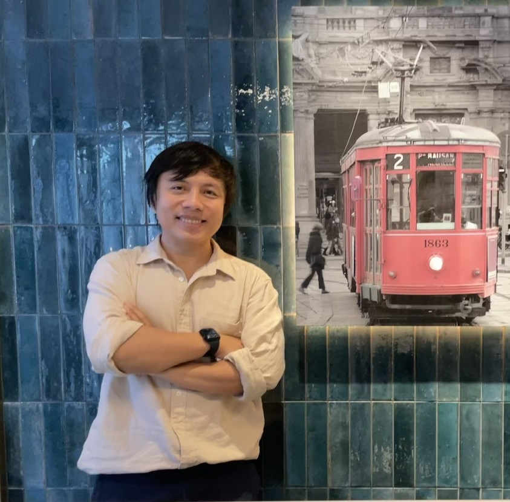

TRIDENT: Tri-modal Deepfake Perception, Detection, and Hallucination Grand Challenge
In conjunction with ACM MM 2026.
Rio de Janeiro, Brazil
TBDIn conjunction with ACM MM 2026.
Rio de Janeiro, Brazil
TBD
The rapid maturation of generative artificial intelligence has fundamentally altered the digital ecosystem, moving beyond simple image synthesis toward a sophisticated, multi-modal reality. While these advancements drive creative innovation, they have simultaneously given rise to a Synthetic Media Paradox: as deepfakes become visually and acoustically indistinguishable from authentic recordings, our detection systems are becoming increasingly powerful but alarmingly less transparent. In a 2026 landscape, where disinformation campaigns leverage high-fidelity images, temporal video sequences, and cloned audio in tandem, traditional binary detection that labels content as simply Real or Fake is no longer a sufficient defense. The TRIDENT Grand Challenge is born from the urgent need to transition from black-box detection toward a white-box forensic paradigm that prioritizes accountability, interpretability, and explanability
The foundational philosophy of TRIDENT is rooted in the Forensic Triad: the belief that a trustworthy AI must not only reach the correct binary conclusion but must do so with the correct reasons. Previous challenges often overlook the Interpretability Gap, where models achieve decent accuracy by potentially exploiting dataset biases or non-semantic shortcuts rather than identifying actual generative artifacts, resulting in the Hallucination Delemma, a critical failure mode where a detector justifies a correct classification through fabricated evidence and points to phantom artifacts that do not exist. In legal, journalistic, or security contexts, such correct but ungrounded decisions are inadmissible and dangerous. TRIDENT mitigates the gap by requiring the model to demonstrate a triad-based Deepfake examination:
We will invite the top-3 performing teams to submit a technical paper. Papers will be limited to 6+2 pages according to the ACM Article Template Please remember to add Concepts and Keywords. Please use the template in traditional double-column format to prepare your submissions. Please list all the author information in your submission. All papers will be reviewed by at least two reviewers with double blind policy. Papers will be selected based on relevance, significance and novelty of results, technical merit, and clarity of presentation. Papers will be published in the conference proceedings of ACM Multimedia 2026.
At the day of the workshop, oral presentations will be conducted by authors who are attending in-person.
Coming very soon!
Coming very soon!

This work was partially supported by the National Science and Technology Council, Taiwan (Grants: NSTC-112-2628-E-002-033-MY4, NSTC-114-2634-F-002-004, and NSTC-112-2221-E-A49-059-MY3), the Taiwan Centers of Excellence (TCE), and the Center of Data Intelligence: Technologies, Applications, and Systems (Grants: 115L900901/115L900902/115L900903), National Taiwan University, from the Featured Areas Research Center Program within the framework of the Higher Education Sprout Project by the Ministry of Education, Taiwan.
This work was also supported by the NVIDIA Academic Grant Program. Access to NVIDIA GPUs and software toolkits enabled us to conduct experiments on large training datasets and inspired new research directions.
For additional info please contact us here